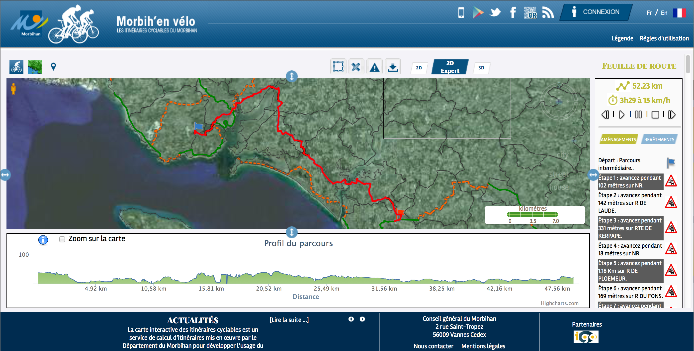

ZOO-Project est une implémentation du Web Processing Service (WPS) écrite en C. C'est une plateforme OpenSource, distribuée sous licence MIT/X11, qui implémente les version 1.0.0 et 2.0 de la norme WPS fournie par l'OGC
Le ZOO-Project fournit un environement de développement permettant de créer et chaîner des services web conformes au WPS. Son objectif principal est de fournir des méthodes génériques et standards pour réutiliser les librairies OpenSource disponibles sous la forme de services WPS.
L'idée du ZOO au FOSS4G 2008
Première présentation du ZOO FOSS4G 2009
Première version ZOO-Project 1.0 FOSS4G 2010
Version ZOO-Project 1.1 au FOSS4G 2011
ZOO-Project 1.2 entre en incubation à l'OSGeo en 2012
Version ZOO-Project 1.3 au FOSS4G 2013
Version ZOO-Project 1.4 au FOSS4G 2014
Version ZOO-Project 1.5 en juillet 2015

Conseil Tribal ZOO
(Commité
de pilotage du projet)
Les gardiens du ZOO
(Développeurs
officiels)
ZOO Visitors
(Utilisateurs et développeurs)
ZOO Animals
(librairies FOSS4G & FOSS)
| Prénom | Nom | Organisation | Pays |
|---|---|---|---|
| Nicolas | BOZON | ESRI France |  FRANCE
FRANCE |
| Maria | BROVELLI | Politecnico di Milano |  ITALY
ITALY |
| Massimilano | CANNATA | SUPSI |
ITALY |
| Gérald | FENOY | GeoLabs |
FRANCE |
| Hirofumi | HAYASHI | Applied Technologies |  JAPAN JAPAN
|
| Daniel | KASTL | GeoRepublic |  GERMANY
GERMANY |
| Jeff | McKENNA | Gateway Geomatics |  CANADA
CANADA |
| Markus | NETELER | Mundialis |
ITALY |
| Venkatesh | RAGHAVAN | Osaka City University |
JAPAN |
| Angelos | TZOTSOS | National Technical University of Athens |  GREECE
GREECE |
| Prénom | Nom | Organisation | Pays |
|---|---|---|---|
| Nicolas | BOZON | ESRI France |
FRANCE |
| Trevor | CLARKE | Ball Aerospace |  USA
USA |
| Luca | DELUCCHI | Fondazione Edmund Mach |
ITALY |
| Gérald | FENOY | GeoLabs |
FRANCE |
| Knut | LANDMARK | Norwegian Defence Research |  NORWAY
NORWAY |
| Jeff | McKENNA | Gateway Geomatics |
CANADA |
| Marco | NEGRETTI | Politecnico di Milano |
ITALY |
| Markus | NETELER | Fondazione Edmund Mach |
ITALY |
| David | SAGGIORATO | Cleolys |
FRANCE |
| Angelos | TZOTSOS | National Technical University of Athens |
GREECE |
Le ZOO-Kernel est un puissant noyau implémenté en C capable de charger dynamiquement des services et de les chainer ensemble.
Les ZOO-Services sont une collection de services WPS prêts à l'emploi et basés sur des librairies existantes.
La ZOO-API est une API JavaScript permettant de créer de nouveaux services ou de chainer des services existants (+logique!).
Le ZOO-Client est une librairie cliente JavaScript permettant d'interragir avec des serveurs WPS de façon extrêmement simple.
Le noyau ZOO implémente le WPS 1.0.0 et 2.0, il fonctionne sur les plateformes GNU/Linux, MacOS X et Windows™.
Le noyau ZOO est en mesure de charger et d'exécuter des services implémentés dans divers languages de programmation : C/C++, Fortran, Java, PHP, Perl, Ruby, Python et JavaScript.

Le support MapServer permet la publication automatique de résultats via : WMS/WFS/WCS

Les services ZOO représentent une collection grandissante de services WPS prêts à l'emploi et basés sur les librairies OpenSource les plus maintenues comme par exemple GDAL.
Un service ZOO est un couple composé du code source (le frounisseur de service) et d'un fichier de métadonnées ZCFG (qui peut être écrit en YAML) qui décrit le service et les entrées et sorties possibles / obligatoires.
Convertissez votre code en service WPS facilement.
def HelloPy(conf,inputs,outputs):
outputs["Res"]["value"]="Hello "+inputs["a"]["value"]+" from Python"
return zoo.SERVICE_SUCCEEDED

Plus de 500 services WPS prêts à l'emploi


La ZOO-API est une librairie JavaScript coté serveur créée pour simplifier la création et le chaînage de services WPS.
Elle utilise Spider Monkey de Mozilla.
Appelez et chaînez vos services WPS simplement.

Le ZOO-Client est une API javaScript coté client cette fois permettant d'interragir avec des serveurs WPS depuis des applications web.
Le ZOO-Client utilise des librairies JavaScript modernes et peut être intégré très facilement dans de nouvelles applications ou dans des applications existantes.
Le ZOO-Client utilise des templates Mustache afin de créer les requêtes WPS


|
FP7 project based on ZOO-Project, pycsw, rasdaman, GeoServer and CKAN
Un SIG dans votre navigateur et un
générateur d'applications SIG Web
http://mapmint.com
Gérald FENOY | GeoLabs | @GeoLabsSARL